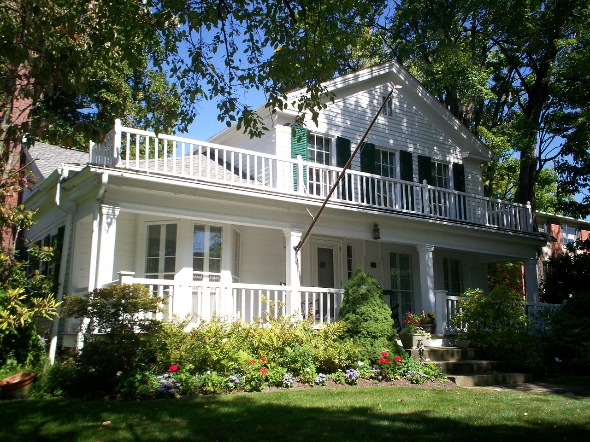
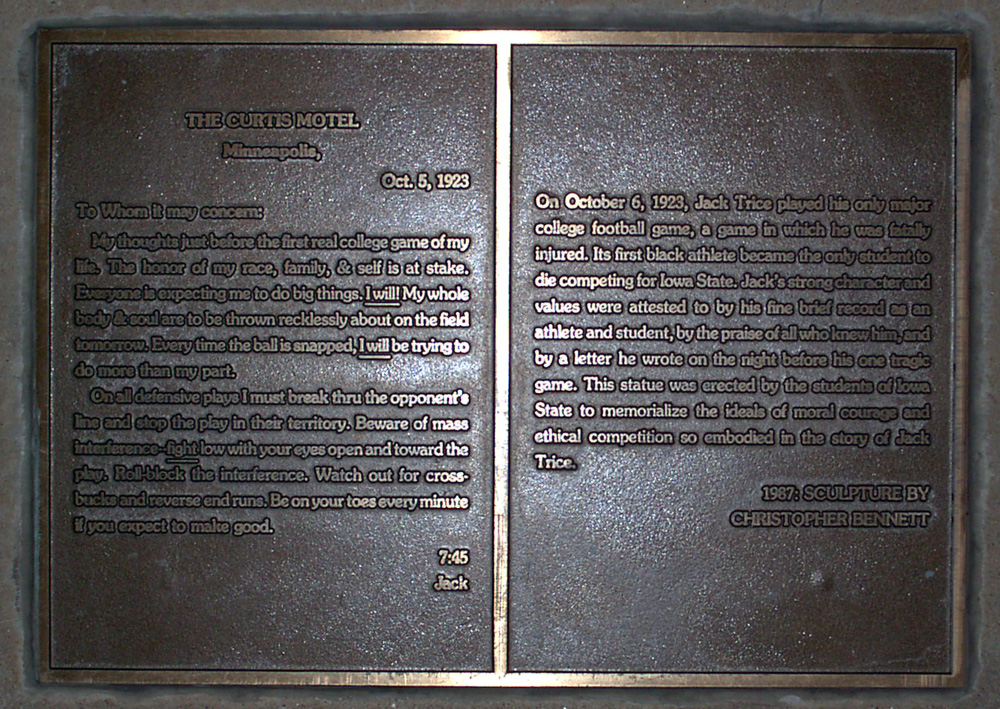

Checkpoint: Hiram


Welcome to the town of Hiram Ohio! Among other things, Hiram is the home of Hiram College. The college was
founded in 1850, then named the Western Reserve Eclectic Institute, it would have its name changed to Hiram College in 1867. In this 17 year period, Hiram
had 7 principals, which would be the equivalent of a president of a university today. Of the 7, 2 of them stand out, being Disciple minister Amos Sutton Hayden,
who led the university through its first 6 years, and James A. Garfield, who had attended the school, later coming back as a teacher. He left in 1861, and was
elected President of the United States in 1880 (information courtesy of wikipedia.com,
image courtesy of JonRidinger - Own work, CC BY 3.0, Link
).
Hiram is also a well-ranked school. Currently, it sits at #14 in Regional Colleges for the Midwest, #6 in Best Value Schools, and #5 in Top Performers on Social Mobility (information courtesy of U.S. News and World Report).
As mentioned above, James A. Garfield has a connection to Hiram, Ohio. While born in Oragne, Ohio, Garfield attended Hiram College for 2 years, though it was at the time referred to as the Western Reserve Eclectic Institute. He transferred to Williams College, where he graduated in 1858. The same year, he returned to Hiram College as a professor of ancient languages and literature. He then, as mentioned above, served as the president of the University, up until the outbreak of the Civil War. In 1859, Garfield began a political career as well, getting elected to the Ohio Senate as a member of the Republican Party. Once the Civil War did break out, Garfield resigned from Hiram to join the Union Army, where he began as lieutenant-colonel of the Forty-Second Ohio Volunteer Infantry. He resigned late in 1863 at the rank of major general. His retirement was acutally due to his election to the United States House of Representatives, where he served 9 consectuive terms before winning the presidential race. Garfield was a Radical Republican, and oppossed Johnson's lenient policy towards the south, as he demanded the enfranchisement of Black men. In 1880, he was appointed to the United States Senate, but declined the job, seeing as he had already won the presidential election. However, Garfield was assassinated after only 4 months in office by Charles Guiteau, who had sought political office under Garfield's administration, and was angered when he was refused a position (information courtesy of hiramvillage.org).
Hiram is also notable as the birthplace of Jack Trice. Trice attended Iowa State, and was one of the first Black people on a major college football team. Up until Trice, most Black students would have to attend historically Black colleges in the south if they wanted to play football. Tragically, in Trice's first varsity game, against the University of Minnesotta on October 6. 1923, he was fatally injured. During a play, Trice threw himself in front of a rush of blockers. He ended up on his back instead of his stomach and got trampled. The play was called a roll-back, and is now banned from play. This caused internal bleeding which ended up resulting in Trice's death. Before the game, Trice wrote a stationary, as he knew the historic nature of what he was about to do, which is inscribed on the plaque to the left. The impact he had, and the tragedy of his death, caused Iowa State to name their stadium after him, and it remains the only major college stadium named after a Black person (image courtesy of Jaretac (talk) - http://www.rofflehaus.com/w/images/2/29/Jack_trice_sculpture_plaque.jpg, Public Domain, Link ).
Hiram is also a well-ranked school. Currently, it sits at #14 in Regional Colleges for the Midwest, #6 in Best Value Schools, and #5 in Top Performers on Social Mobility (information courtesy of U.S. News and World Report).
As mentioned above, James A. Garfield has a connection to Hiram, Ohio. While born in Oragne, Ohio, Garfield attended Hiram College for 2 years, though it was at the time referred to as the Western Reserve Eclectic Institute. He transferred to Williams College, where he graduated in 1858. The same year, he returned to Hiram College as a professor of ancient languages and literature. He then, as mentioned above, served as the president of the University, up until the outbreak of the Civil War. In 1859, Garfield began a political career as well, getting elected to the Ohio Senate as a member of the Republican Party. Once the Civil War did break out, Garfield resigned from Hiram to join the Union Army, where he began as lieutenant-colonel of the Forty-Second Ohio Volunteer Infantry. He resigned late in 1863 at the rank of major general. His retirement was acutally due to his election to the United States House of Representatives, where he served 9 consectuive terms before winning the presidential race. Garfield was a Radical Republican, and oppossed Johnson's lenient policy towards the south, as he demanded the enfranchisement of Black men. In 1880, he was appointed to the United States Senate, but declined the job, seeing as he had already won the presidential election. However, Garfield was assassinated after only 4 months in office by Charles Guiteau, who had sought political office under Garfield's administration, and was angered when he was refused a position (information courtesy of hiramvillage.org).
Hiram is also notable as the birthplace of Jack Trice. Trice attended Iowa State, and was one of the first Black people on a major college football team. Up until Trice, most Black students would have to attend historically Black colleges in the south if they wanted to play football. Tragically, in Trice's first varsity game, against the University of Minnesotta on October 6. 1923, he was fatally injured. During a play, Trice threw himself in front of a rush of blockers. He ended up on his back instead of his stomach and got trampled. The play was called a roll-back, and is now banned from play. This caused internal bleeding which ended up resulting in Trice's death. Before the game, Trice wrote a stationary, as he knew the historic nature of what he was about to do, which is inscribed on the plaque to the left. The impact he had, and the tragedy of his death, caused Iowa State to name their stadium after him, and it remains the only major college stadium named after a Black person (image courtesy of Jaretac (talk) - http://www.rofflehaus.com/w/images/2/29/Jack_trice_sculpture_plaque.jpg, Public Domain, Link ).
{kind=link}
{kind=link}
To further explore Hiram, click here
Pedaling for Parkinsons claims no affiliation with Google Street View